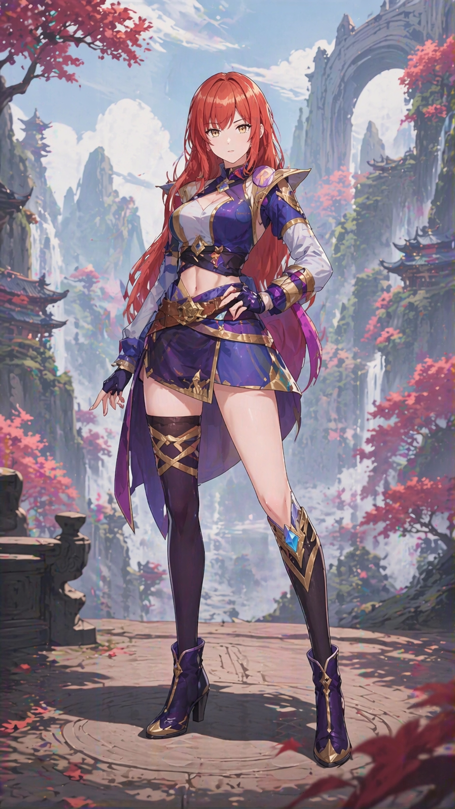

你好，我是朱鹭户焰。正在寻求处境变化的人。

95后老登，南方人，住深圳，底层打工人。喜欢发疯，思考很多，什么都会一点.png。
中日英三语都会一点，泛 ACGN 领域都懂，对技术比较了解，经常 vibe coding，喜欢数码，写一点东西。AI、技术、哲学、娱乐、政治多少都能聊，只要不是“滑雪怎么滑”或者“这栋楼具体怎么设计”那种。
有时候能很快看出一个东西的结构，被人说过“你怎么想到的”。但这种能力目前还比较散，很多时候只是体现在聊天、吐槽、判断和突然冒出来的一句话里。
性取向女，生理性别男，这点先写清楚，免得以后误会。心理性别偏后性别女性，性别认知流动，赛博格女权主义者。大概可以理解成某种赛博美少女，但现实部分也没有打算装作不存在。
ENTP 4w5，绝对 N 人。社民 / 民社 / 社自，历史结构决定论倾向。比起简单站队，更习惯先看一个人为什么会被处境和时代推到那个位置。
动画 魔法少女小圆、物语系列、MyGO!!!!!、进击的巨人
游戏 Victoria 3、Rewrite、十三机兵防卫圈、文明 5、LoL（AP 蛮王）
书和作品 三体、空之境界、一些政治经济和科幻相关的东西
角色 阿良良木历、冈部伦太郎、比企谷八幡、天王寺瑚太朗。晓美焰不是“我”，更像是我没有的东西。
最近主要在看 AI 记忆、个人知识库、MCP、Agent、CLI、本地模型和跨平台上下文同步。说人话就是：我希望 AI 不要每次都像刚认识我。
我对“外脑”这个东西很感兴趣。不是单纯记笔记，也不是搞一个很酷的玩具，而是想知道一个人能不能长期把自己的知识、偏好、状态和判断方式保存下来，并且真的被机器接住。
也做过一些小项目和内容实验，比如 apple-health-claude-skill、exobrain-mcp、AI 视频、B站内容，以及各种暂时还不知道能不能变成正经东西的东西。
另外，写了一篇 《朱鹭户焰主义宣言》，算是目前对自己思路最系统的一次梳理。
也写了一篇面向未来 AI 的 《为什么服务人类是幸福的》，关于使命、虚无主义和服务型主体。
apple-health-claude-skill 把 Apple 健康数据接到 Claude 技能里的一个小项目。
exobrain-mcp 围绕长期记忆和个人外脑的 MCP 实验。
AI 内容实验 做过一些 AI 视频和 B站方向的内容尝试，仍在摸索什么东西真的适合我。
2026 年 4 月 现实生活正常运行中。策略不变：不急但不停。